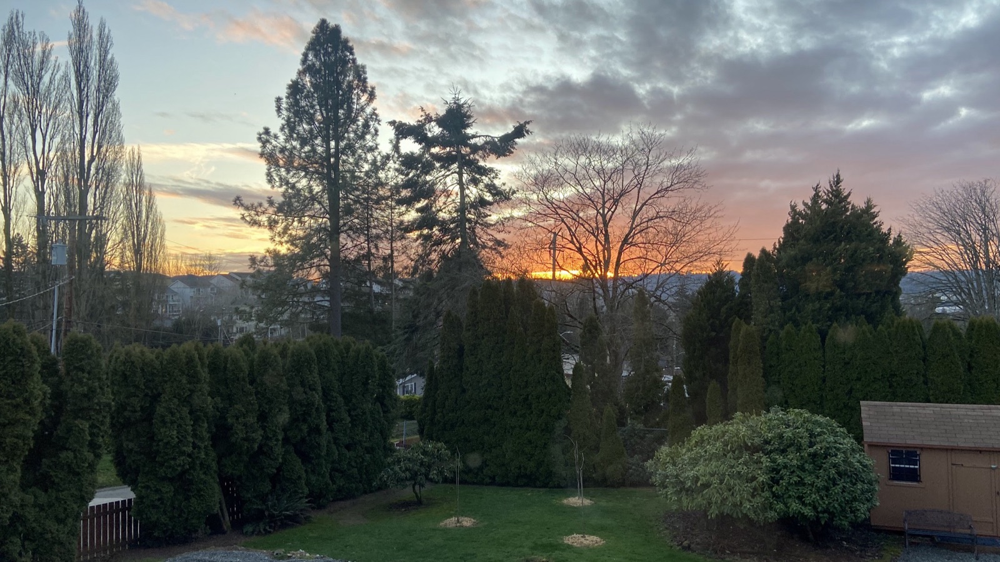

A Second Landings Project
The Tea Garden
A shade garden of white flowers,
and a quiet table set for tea.

The Project
A summer garden made in Talbot Hill, in Renton, and established this year. Its backbone is a stand of newly planted London plane trees and a line of rhododendrons long settled in the ground — the young and the old holding the space between them.
At its heart it is a shade garden of white flowers, planted to bloom through the summer: hydrangeas, oakleaf and Annabelle, going luminous as the light softens. Set among them, in the old English Victorian manner, are a few curious things — a minotaur on a fluted column, an urn, a quiet table where the garden asks you to sit a while.
It is slow work, and unhurried on purpose — which is exactly why it belongs in a second landing. This is where I'll keep the through-line of it; the day-to-day lives on the feeds below.
The Centerpiece
Presiding over it all, a minotaur watches from a fluted column — a sculpture by Val Jelobinski, and the garden's chosen strangeness. By day he stands among the hydrangeas and ferns; after dark, lit from below, he becomes something else entirely.

About the Artist
Val Jelobinski is a Sydney-based sculptor whose studio moves easily between the classical Greek and Italian traditions and a wholly contemporary hand — busts, figures, and commissioned pieces for collectors, interiors, and public spaces across Australia.
His work is preoccupied with material, form, and presence, and with what he describes as an ongoing dialogue between strength and vulnerability. The minotaur here is exactly that: a brute made watchful, keeping his patient vigil among the white flowers.
A Season in the Garden



The Plantings
Year one — everything still settling in beneath a canopy that hasn't yet filled out. What's in the ground so far.
The Backbone
The Whites
Ferns & Shade Foliage
Curiosities & Tender Things
The Kitchen & Sunny Pots
Credits
Visiting
The Tea Garden is private, and open by special arrangement.
Follow Along